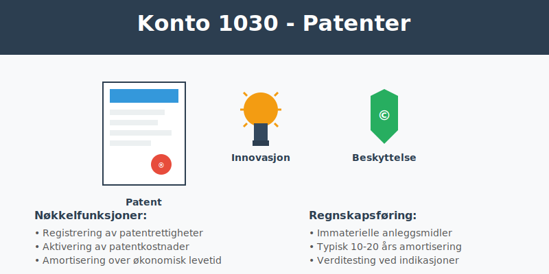
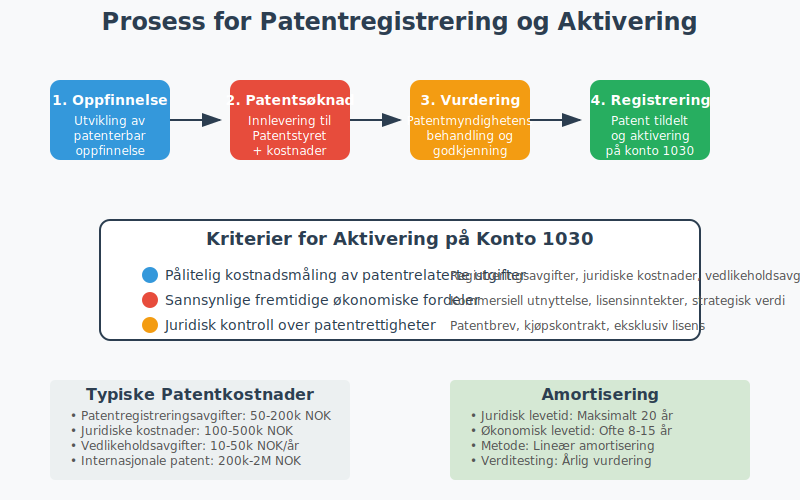
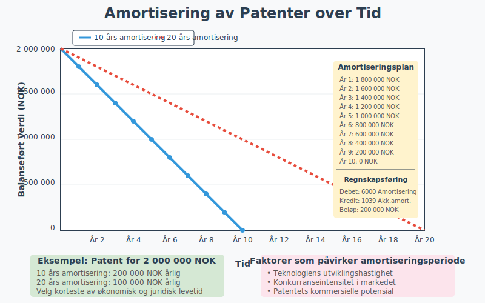

Konto 1030 - Patenter er en sentral konto i norsk kontoplan for virksomheter som eier eller utvikler patentrettigheter. Denne kontoen brukes for å registrere immaterielle eiendeler knyttet til patenter som kan aktiveres i balansen og amortiseres over patentets levetid.

Hva er patenter?
Et patent er en eksklusiv rettighet som gir oppfinneren enrett til å utnytte en oppfinnelse kommersielt i en bestemt periode. I Norge administreres patenter av Patentstyret, og et patent gir oppfinneren eneret til å:
- Produsere produkter som benytter oppfinnelsen
- Selge eller lisensiere ut patentrettigheter
- Hindre andre fra å bruke oppfinnelsen uten tillatelse
- Søke erstatning ved patentbrudd
Patentperioden i Norge
| Patenttype | Maksimal varighet | Fornyelseskrav |
|---|---|---|
| Vanlige patenter | 20 år | Årlige fornyelsesavgifter |
| Legemiddelpatenter | 20 år + 5 års forlengelse | Spesielle regler for SPC |
| Brukermodeller | 10 år | Årlige fornyelsesavgifter |
Kriterier for aktivering av patenter
For at patenter kan aktiveres på konto 1030, må de oppfylle følgende kriterier:
1. Pålitelig kostnadsmåling
Anskaffelseskostnaden må kunne måles pålitelig og inkludere:
- Patentregistreringsavgifter
- Advokathonorar og konsulentutgifter
- Oversettelseskostnader
- Vedlikeholdsavgifter
- Utviklingskostnader knyttet til patentsøknad
2. Fremtidige økonomiske fordeler
Patentet må ha sannsynlig økonomisk verdi gjennom:
- Kommersiell utnyttelse i egen produksjon
- Lisensinntekter fra andre aktører
- Salg av patentrettigheter
- Strategisk verdi som konkurransefortrinn
3. Kontrollert ressurs
Virksomheten må ha juridisk kontroll over patentet gjennom:
- Registrerte patentrettigheter
- Kjøpskontrakt eller overføring
- Eksklusiv lisensavtale
- Selvstendig utvikling

Hva kan aktiveres på konto 1030?
Aktiverbare kostnader
- Patentregistreringsavgifter til nasjonale og internasjonale patentmyndigheter
- Juridiske kostnader for patentsøknad og forsvar
- Konsulenthonorar for patentrådgivning
- Oversettelseskostnader for internasjonale patenter
- Vedlikeholdsavgifter for opprettholdelse av patent
- Utviklingskostnader direkte knyttet til patenterbar oppfinnelse
- Kjøpspris for ervervede patenter
Ikke-aktiverbare kostnader
- Forskningskostnader i tidlig fase
- Generelle administrative kostnader
- Markedsføringskostnader
- Opplæring av ansatte
- Vedlikeholdskostnader for eksisterende produkter
Amortisering av patenter
Immaterielle eiendeler på konto 1030 skal amortiseres over patentets økonomiske levetid eller juridiske levetid, avhengig av hva som er kortest.
Amortiseringsperioder
| Patenttype | Juridisk levetid | Typisk økonomisk levetid |
|---|---|---|
| Teknologipatenter | 20 år | 8-15 år |
| Prosesspatenter | 20 år | 10-20 år |
| Produktpatenter | 20 år | 5-12 år |
| Farmasøytiske patenter | 20 år + SPC | 12-25 år |
Amortiseringsmetoder
Lineær amortisering er den vanligste metoden:
Årlig amortisering = Anskaffelseskost / Amortiseringsperiode
Eksempel: Patent anskaffet for 2 000 000 NOK med 10 års økonomisk levetid:
- Årlig amortisering = 2 000 000 / 10 = 200 000 NOK

Regnskapsføring av patenter
Anskaffelse av patent
Debet: Konto 1030 - Patenter
Kredit: Konto 1900 - Bank/Kasse
Årlig amortisering
Debet: Konto 6000 - Amortisering immat. eiendeler
Kredit: Konto 1039 - Akkumulert amortisering patenter
Salg av patent
Debet: Konto 1900 - Bank/Kasse
Debet: Konto 1039 - Akkumulert amortisering patenter
Kredit: Konto 1030 - Patenter
Kredit: Konto 8000 - Gevinst ved salg av anleggsmidler
Verditest og nedskrivning
Patenter på konto 1030 må regelmessig vurderes for nedskrivning dersom det foreligger indikasjoner på verdifall:
Indikatorer på verdifall
- Teknologiske endringer som gjør patentet obsolet
- Konkurrerende teknologier som reduserer patentets verdi
- Markedsendringer som påvirker kommersielt potensial
- Juridiske utfordringer mot patentets gyldighet
- Regulatoriske endringer som begrenser patentets anvendelse
Nedskrivningstest
- Identifiser indikasjon på verdifall
- Beregn gjenvinnbart beløp (høyeste av bruksverdi og virkelig verdi)
- Sammenlign med balanseført verdi
- Regnskapsføre nedskrivning hvis nødvendig
Debet: Konto 6900 - Nedskrivning av anleggsmidler
Kredit: Konto 1030 - Patenter
Forskjell fra andre immaterielle eiendeler
| Konto | Beskrivelse | Hovedforskjell |
|---|---|---|
| 1000 | Forskning og utvikling | Intern utvikling, ikke patentert |
| 1020 | Konsesjoner | Offentlige tillatelser og rettigheter |
| 1030 | Patenter | Beskyttede tekniske oppfinnelser |
| 1040 | Lisenser | Rettigheter til ekstern IP |
| 1050 | Rettigheter | Andre immaterielle rettigheter |
Internasjonale patenter
For virksomheter med internasjonale patenter gjelder spesielle hensyn:
PCT-søknader (Patent Cooperation Treaty)
- Kostnad: Høyere registreringsavgifter
- Aktivering: Kan aktiveres ved innlevering
- Amortisering: Må vurderes per jurisdiksjon
EU-patenter
- Kostnad: Avgifter til European Patent Office
- Validering: Må valideres i hver medlemsstat
- Vedlikehold: Separate vedlikeholdsavgifter
Valutarisiko
Patenter i utenlandsk valuta må:
- Omregnes til NOK ved aktivering
- Revalueres ved valutakursendringer
- Sikres mot valutarisiko ved behov
Lisensinntekter og royalties
Patenter på konto 1030 kan generere lisensinntekter som skal:
Regnskapsføring av lisensinntekter
Debet: [Konto 1500 - Kundefordringer](/blogs/kontoplan/1500-kundefordringer "Konto 1500 - Kundefordringer")
Kredit: Konto 3000 - Salgsinntekter
**Merk:** Kostnader til lisensavgifter og royalties bokføres på [Konto 7600 - Lisensavgifter og royalties](/blogs/kontoplan/7600-lisensavgifter-og-royalties "Konto 7600 - Lisensavgifter og royalties").
Skattemessig behandling
- Lisensinntekter regnes som skattepliktig inntekt
- Royalties kan være gjenstand for kildeskatt
- Internprising må dokumenteres for konserninternt salg
Eksempel på bruk av konto 1030
Eksempel: TechInnovate AS har utviklet en ny produksjonsmetode og søker patent.
Kostnader i patentprosessen:
- Patentregistreringsavgifter: 150 000 NOK
- Juridiske kostnader: 300 000 NOK
- Konsulenthonorar: 200 000 NOK
- Oversettelseskostnader: 50 000 NOK
- Totalt: 700 000 NOK
Regnskapsføring:
- Aktivering av patentkostnader på konto 1030
- Amortisering over 12 år (58 333 NOK årlig)
- Lisensinntekter fra tredje part: 150 000 NOK årlig
Lønnsomhetsanalyse:
- Årlig netto: 150 000 - 58 333 = 91 667 NOK
- Tilbakebetalingstid: 700 000 / 91 667 = 7,6 år
Skattemessige forhold
Skattemessig behandling av patenter kan avvike fra regnskapsmessig behandling:
Aktivering og amortisering
- Skattemessig: Minimum 10 års avskrivning
- Regnskapsmessig: Økonomisk levetid (ofte kortere)
- Forskjell: Kan gi midlertidige forskjeller
Spesielle skatteordninger
- Patentboksskatt: Redusert skattesats på patent-inntekter
- SkatteFUNN: Fradrag for FoU-kostnader
- Innovasjonsfradrag: Tilleggsfradrag for visse innovasjoner
Rapportering i årsregnskapet
Patenter på konto 1030 rapporteres som anleggsmidler i balansen. I notene må det opplyses om:
Påkrevde opplysninger
- Anskaffelseskost ved årets begynnelse
- Tilgang i løpet av året
- Amortisering i løpet av året
- Nedskrivninger hvis aktuelt
- Balanseført verdi ved årets slutt
- Amortiseringsmetode og restlevetid
Vurdering av usikkerhet
- Teknologirisiko og markedsrisiko
- Juridisk risiko ved patenttvister
- Regulatorisk risiko ved endringer i lovgivning
Praktiske tips for virksomheter
Patentstrategi
- Kartlegg konkurransefortrinn som kan patenteres
- Vurder kostnader mot forventet avkastning
- Prioriter viktigste markeder for patentbeskyttelse
Dokumentasjon og kontroll
- Oppbevar all dokumentasjon knyttet til patenter
- Overvåk patentporteføljen for vedlikehold
- Etabler rutiner for verditesting
Organisering
- Ansvarlig for patentportefølje
- Budsjett for patentvedlikehold
- Varslingssystem for fornyelser
Relaterte artikler
- Konto 1000 - Forskning og utvikling
- Konto 1020 - Konsesjoner
- Konto 1040 - Lisenser
- Konto 1050 - Varemerker
- Konto 1060 - Andre rettigheter
- Konto 7610 - Patentkostnad ved egen patent
- Hva er Imaterielle Eiendeler?
- Hva er Aktivering i Regnskap?
- Hva er Amortisering?
- Hva er Anleggsmidler?
- Hva er Balanse?
- Hva er Anskaffelseskost?